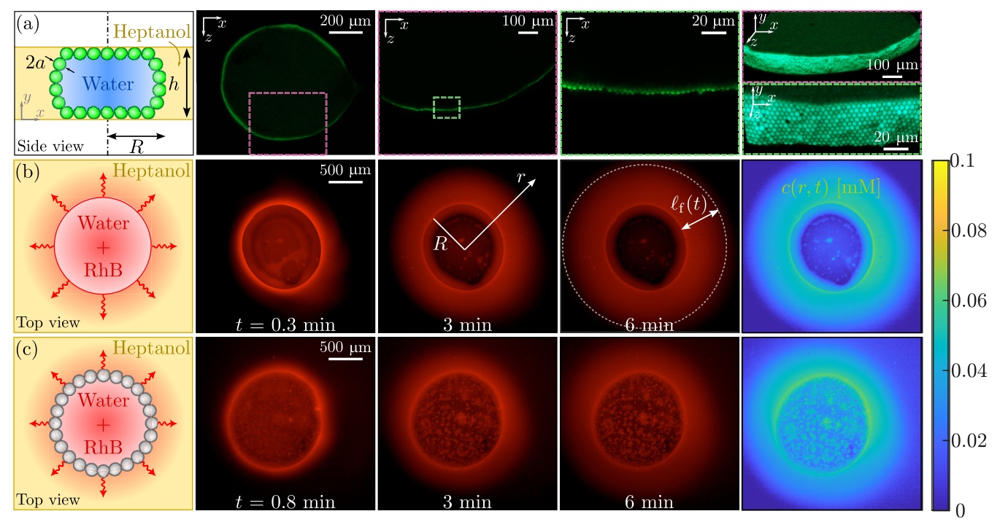
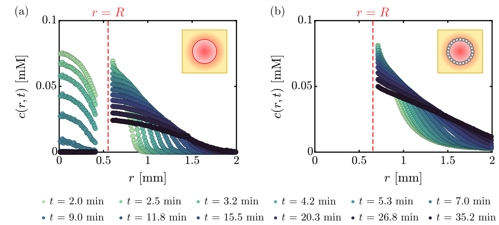
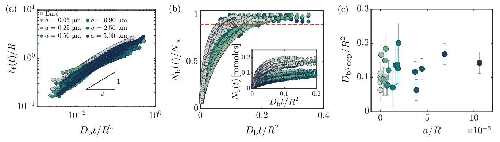
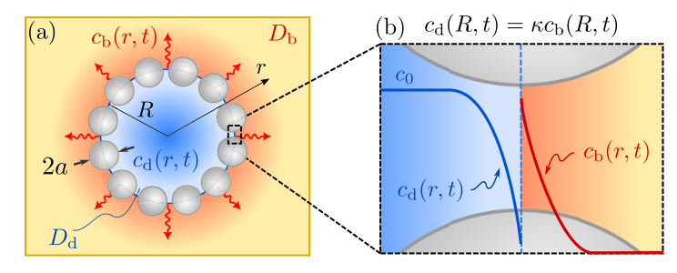
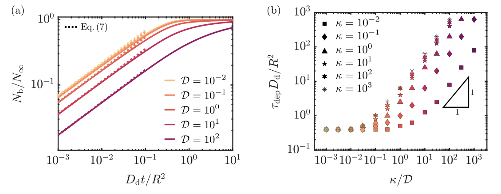
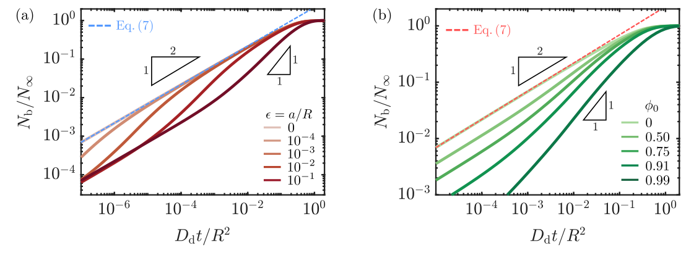
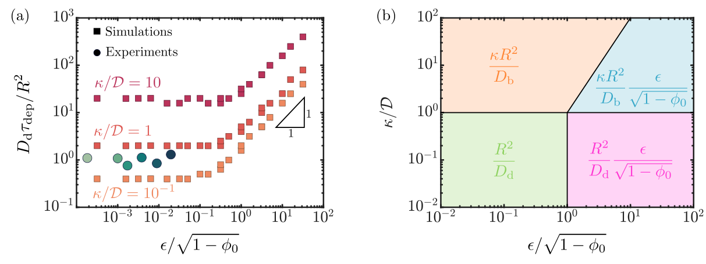

颗粒包住液滴以后，分子还要多久才能扩散出去？
在近二维的水滴–庚醇实验里，改变颗粒大小并未带来清晰的总耗尽时间变化。模型区分了界面局部阻力与整体释放时间。
Diffusion from particle-coated drops: The subtle role of particle size
文章目录
研究背景 · 稳定乳液与阻止分子通过，是两件事
Pickering 乳液之所以稳定，是因为吸附在界面的颗粒能阻止液滴并合，或改变界面的力学响应。但一个分子从颗粒间隙穿过去，并不需要两个液滴接触、并合。因此，“乳液数月不分层”不能自动证明“溶质数月不泄漏”。这是作者要拆开的概念混淆。
直觉上，颗粒减少了裸露面积，按照“通量＝面积×扩散系数×浓度梯度”，传质量应该降低。然而这个推理偷偷固定了浓度梯度。实际浓度场会调整：颗粒造成的狭窄区域很薄，跨越这一区域的梯度可能变陡；等扩散前沿远离颗粒层后，更大的液滴内部或外部扩散距离反而成为限制步骤。只看被遮挡面积，漏掉了阻力分布的变化。
作者用一个几何形状基本固定的模型体系，同时测量空间浓度场和释放总量，再用具有可变通道面积的扩散方程解释。这比只比较液滴寿命、直径或一张荧光照片，更能隔离颗粒层本身的作用。
研究方法：先让“颜色”成为可核对的浓度
几何与材料
水滴先在十六烷中通过涡旋乳化形成聚苯乙烯颗粒稳定的乳液，再被移入 1-庚醇，夹在两片玻璃之间。间距 h＝175 μm，形成半径 R＝0.40–0.85 mm 的薄饼形水滴。这样的设计把三维扩散简化为近似二维径向扩散，并保持传质面积相对稳定。
颗粒半径为 0.05、0.25、0.50、0.90、2.50、5.00 μm。50 mM CaCl₂ 用于屏蔽带负电颗粒之间的排斥，促进它们吸附到界面。染料 Rhodamine B（RhB）也会吸附到颗粒，因此不能把配液浓度直接当成包覆液滴内的初始自由染料浓度。作者通过最终进入外相的染料总量，反推初始可释放量。

回答的问题： 能否构造一个颗粒层形态可检查、扩散又可定量成像的单液滴体系？
图中证据或方法： (a) 共聚焦影像与三维重建显示 2 μm 颗粒位于界面，局部近六角排列并带少量缺陷；(b) 裸滴、(c) 5 μm 颗粒包覆滴均出现随时间向外延伸的 RhB 荧光区。图内保留侧视/俯视示意、比例尺与浓度色标。
支撑的结论： 夹持后的大颗粒包覆层仍可以保持单层形态；包覆并没有完全封闭溶质通道，适合进一步比较释放动力学。
局限与读图注意： 2 μm 共聚焦验证并不等于所有粒径都有同样结构。作者无法确认 50、250、500 nm 颗粒的覆盖与层数；大颗粒的覆盖率估计约 0.65–0.75。图中两组起始拍摄时间不同，不能从第一帧亮度直接比较瞬时通量。
荧光浓度、分配系数与扩散系数怎么来
540 nm 激发、625 nm 发射，2× 显微镜、0.1 fps 拍摄。取红通道强度 G，使用已知浓度溶液分别标定两个液相，得到 c(r,t)＝bG(r,t)。b 在庚醇和水中分别为 0.14、0.18 mM/a.u.。保持照明与曝光一致，归一化强度不超过约 70%，避免饱和破坏线性。这里的重点是：同一染料在不同溶剂里，荧光强度并不是同一把浓度尺。
对每一个半径做周向平均，得到 c(r,t)。这减少角向噪声，但非圆形液滴会使界面附近出现人为小跳变；后续积分因此从约 1.05R 而不是恰好 R 开始。该处理减少几何伪影，却也会遗漏很薄的近界面区域，属于传质量误差来源。
分配系数 κ 不是从荧光图随意拟合：水—庚醇 1:1 体积接触、平衡两天后，用分光光度法得到 κ＝cd/cb＝1/88。因此 RhB 在平衡时更偏好庚醇。水中扩散系数引用已有测量 Dd≈4.2×10⁻¹⁰ m²/s；庚醇中的值则由 Stokes–Einstein 关系、假设水动力半径不变推得约 0.6×10⁻¹⁰ m²/s，并非本文直接测量。正式 PDF 第 4 页把后者也写成 Dd，与后文定义不一致；依上下文应指外相 Db，复算前需核对作者数据。
具体结果：先看浓度场，再看总释放量
1. 界面浓度不连续，不等于通量不连续

回答的问题： 染料从水滴进入庚醇时，浓度怎样随位置与时间变化？
图中证据或方法： (a) 裸滴内浓度随时间降低，跨界面后浓度跃升，再向外衰减；(b) 包覆滴外相也出现向外展宽、近界面浓度降低的剖面。颜色表示时间，虚线标记 r＝R。
支撑的结论： 界面附近的浓度跃变与两相溶解偏好一致；包覆滴仍持续向外输运染料，外部浓度场在形状上与裸滴相似。
局限与读图注意： 包覆颗粒妨碍滴内荧光定量，因此 (b) 没有同等质量的滴内浓度测量；“剖面看着相似”还不能证明累计释放量相同。裸滴示例约 7 分钟耗尽不是所有液滴的统一寿命。
分配条件 c_d(R,t)＝κc_b(R,t) 允许两侧浓度不同；守恒要求的是扩散通量连续 D_d ∂r c_d＝D_b ∂r c_b。因此不能用“界面两侧颜色不同”直接宣称存在额外的颗粒阻力，也不能把浓度跳变当作数值错误。
2. 穿透距离不变还不够，必须同时核对传出的总量

回答的问题： 颗粒是否只是让前沿跑得一样远，却减少了真正释放的染料？
图中证据或方法： (a) 不同粒径及裸滴的 ℓf/R 对 Dbt/R² 近似塌缩，呈 t¹ᐟ²；(b) 外相积分染料量 Nb/N∞ 大体塌缩；(c) 以 90% 最终释放量定义的 τdep，随 a/R 未出现明确单调趋势。
支撑的结论： 在实验覆盖的粒径和覆盖率范围内，颗粒对前沿扩展与整体耗尽时间的影响，都小于清晰可识别的系统变化；不能只凭面积极小就预设强阻隔。
局限与读图注意： 图 (c) 有可见散布，不是严格零效应检验。误差棒由把耗尽阈值从 90% 改为 95% 得到，并非独立重复样本的标准差或置信区间；主文未给统一重复次数 N。归一化会去掉各次实验初始释放量的差异，所以还要看 (b) 插图的绝对量。
穿透长度由归一化强度低于 10% 的位置定义；外相累计量由 N_b(t)＝∫ 2πrh c(r,t)dr 得到。两者含义不同：前者描述空间传播，后者是物料衡算。正文把 N 称作 mass，但以浓度积分得到并在图中标作 mmol，实际更接近物质的量；单位核对比术语更可靠。
模型：把颗粒变成一段“可用截面变化的通道”

回答的问题： 怎样在不解析每个颗粒三维孔道的情况下，把包覆、扩散和溶解偏好一起放进模型？
图中证据或方法： (a) 区分液滴与外相的浓度和扩散系数；(b) 示意颗粒层内收缩的可用通道以及满足 cd＝κcb 的界面浓度。
支撑的结论： 这是轴对称、准一维 Fick–Jacobs 型扩散框架：颗粒改变局部可通过面积，两相仍通过分配平衡与通量守恒连接。
局限与读图注意： 这张图是模型示意，不是实测孔道。球体在弯曲界面的真实堆积被近似为平面晶格；a/R≪1 时较合理。模型不包含颗粒吸附动力学、对流、界面迁移、纳米孔中的位阻与多层复杂连通性。
两相分别满足：
∂c/∂t＝[D/(rA)] ∂/∂r (rA ∂c/∂r)。
这里的 D 在这一行表示相应相的有量纲扩散系数；以下用花体 𝒟＝Db/Dd 表示无量纲扩散系数比，避免混淆。可用截面 A(r)＝A₀[1−φ(r)]，在颗粒层 |r−R|≤a 内，φ(r)＝φ₀[1−((r−R)/a)²]；层外 φ＝0。中间最窄、向两边渐宽，正是球形颗粒留下孔隙的粗粒化表达。
理论第一层：没有颗粒，也可能有三种耗尽瓶颈

回答的问题： 要判断颗粒是否增加阻力，先得知道无颗粒体系原本由什么限制。
图中证据或方法： (a) 数值累计释放曲线在早期接近平面扩散解的 t¹ᐟ²，在后期达到有限液滴的总量平台；(b) τdepDd/R² 对 κ/𝒟 在一端近似恒定，在另一端增长，部分低 κ 数据不完全塌缩。
支撑的结论： 耗尽可以受滴内扩散、外相扩散或不利分配限制；早期平面解不能描述有限液滴的全部耗尽过程。
局限与读图注意： 正式稿存在需核查的内部不一致：第 7 页定义 𝒟＝Db/Dd，但 (a) 的图例排列与第 8 页末关于增大 𝒟 后耗尽变慢的描述，不符合按式 (7) 与该定义应得的趋势。这里保留原图，不据此宣称“外相扩散越快释放越慢”；定量重用应核查原始程序或向作者确认。
尺度律的教学读法是把“走多远”和“能容纳多少”分开：
| 瓶颈 | 作者给出的渐近条件 | 耗尽时间量级 | 含义 |
|---|---|---|---|
| 滴内扩散受限 | 𝒟≫1 且 𝒟≫κ，或 κ≪√𝒟≪1 | R²/Dd | 外面能接走，慢的是染料从滴内走到界面 |
| 外相扩散受限 | √𝒟≪κ≪1 | κ²R²/Db | 外相虽更喜欢染料，却扩散得太慢，近界面堆积 |
| 分配/溶解度受限 | 𝒟≪κ 且 κ≫1 | κR²/Db | 外相不愿容纳染料，界面可维持的外相浓度很低 |
这些是渐近量级，不是带精确前因子的普适拟合式。尤其不能用仅有 κ/𝒟 的一张相图完整描述外相扩散受限区，因为该区还分别依赖 κ 与 𝒟。
理论第二层：颗粒改变早期，但未必改变最终耗尽

回答的问题： 为什么明显减少开放面积，累计耗尽仍能接近裸滴？
图中证据或方法： 在 𝒟＝0.1、κ＝0.01 下，(a) 固定 φ₀＝0.91 改变 ε，(b) 固定 ε＝0.05 改变 φ₀。曲线可经历 t¹ᐟ²、t、再接近裸滴扩散的阶段；φ₀＝0.99 的极端算例延长耗尽。
支撑的结论： 颗粒对早期通量有明显作用，但颗粒层阶段若远短于滴的整体耗尽时间，最终耗尽仍由液相扩散主导。改变早期过程和改变整滴释放时间不是同一个命题。
局限与读图注意： 这是模型扫描，不是全部工况都有实验验证。φ₀＝0.99 超过未变形球形单层六角密排约 0.91 的几何上限，需要烧结等不同形态才可能实现。图注写 Dbt/R²，图轴与正文写 Ddt/R²；两者相差 𝒟，定量复算应先统一约定。
三个阶段可这样理解。极早期，扩散只看到界面最窄的截面，传出量相当于裸界面平面解乘 (1−φ₀)，仍为 t¹ᐟ²。中间阶段，扩散已穿过最窄区域，薄层形成近准静态梯度，局部通量近常数，累计量因此近似与 t 成正比。较晚阶段，浓度变化的主要距离扩展到颗粒层之外，层内相对变平，远处液相重新主导总阻力；若液滴已经耗尽，这个晚期阶段当然不会出现。
原文给出两个过渡时间量级：τ_early ∼ βa²(1−φ₀)/D_d 与 τ_int ∼ βa²/[D_d(1−φ₀)]，其中 β＝[(1＋κ/𝒟)/(1＋κ/√𝒟)]²。β 在本篇是传质参数组合，与其他论文里同名参数无关。覆盖率趋近 1 时，中间阶段急剧拉长；增加粒径则通过 a² 同时推迟时间过渡。
关键判据：层的相对尺度与开放面积必须一起看

回答的问题： 哪一种颗粒层才值得期待真正的缓释效果？
图中证据或方法： (a) 数值耗尽时间对 q＝ε/√(1−φ₀) 从平台过渡到随 q 增长，实验点位于低 q 区；(b) 将 q 与 κ/𝒟 组织为分区图，区分液相控制与包覆层增加阻力。
支撑的结论： 不能只报粒径或覆盖率：粒径相对液滴半径的尺度，以及覆盖率距完全封闭还差多少，共同决定颗粒层能否主导耗尽。作者给出滴内受限时 q≳1、分配受限时 q≳√κ 的量级判据。
局限与读图注意： 图 (b) 明确没有覆盖完整的外相扩散受限分区；不能当作所有 κ、𝒟 的精确通用相图。极端覆盖区主要来自模型。图注中的 τdepR²/Dd 排列与无量纲性不符，图轴的 Ddτdep/R² 才是无量纲组合。
一个有用的量级检验是：若 ε＝0.01，即颗粒半径仅为滴半径的 1%，即使 φ₀＝0.91，q 也只有约 0.033；单层仍是一个很薄的局部阻碍。该数值是按原文定义作的说明性计算，不是新增实验结果。若希望 q 接近 1，就必须极大提高封闭程度，或者让颗粒与液滴尺寸接近；后者又可能破坏准一维小颗粒假设。
关键机制与证据强度
实验直接支持： 本体系中不同粒径的穿透尺度与归一化释放曲线近似重合；耗尽时间存在散布但无清晰单调粒径趋势；较大颗粒没有观察到明显多层。
模型解释： 颗粒层的薄、孔道内浓度梯度调整、以及远场扩散阻力的重新占优，使局部通量变化不必转化成整体寿命变化。极端覆盖延迟耗尽，是模型预测，不是本文在烧结颗粒层上的实验证实。
尚未建立： 小颗粒的准确层数与覆盖率；复杂多层、柔性壳、强吸附、宏分子位阻下的通用规律；空气中蒸发液滴或多组分蒸发薄膜的同等结论。
局限与复用前必须核对的内容
液滴转移带入少量十六烷，作者基于混溶性和近似扩散性质认为影响不大，但这不是独立消除该因素的完整敏感性实验。加盖导致最早阶段缺测，恰好模型预测颗粒效应最强的阶段可能最难实验捕捉。归一化最终释放量掩盖初始染料量差异；染料对颗粒的吸附、近界面积分缺失以及强度标定都需要单独纳入误差预算。
Fick–Jacobs 通道近似对快速截面变化需要修正；当孔径接近分子尺寸，连续扩散框架不再适用。模型假定单层且形态已知，不宜拿 φ₀ 一项替代多层厚度、曲折度或孔隙连通性。文中的若干 D 符号、时间归一化及图注排版疑点已在相应图下标出；它们不推翻实验的定性结果，但阻止我们直接把全部曲线当作无歧义的定量基准。